If you have a brand new Mobi, or need to turn it on and get it out of "deep sleep" mode:
While there is an option currently to connect to the pump directly from AAPS (Option B below), I would like to remind you that the Mobi pump does not have a screen, and if something goes wrong, there are limited options for fixing the pump from within AAPS. To solve serious problems with the pump, you would either need the offical app (the "Tandem Mobi" app for iPhone, Android version expected by the end of Q1 2026) or ControlX2 in tandem to AAPS itself.
Re-pairing the Mobi pump requires a wireless charger. While testing Mobi with AAPS, you should have a wireless charger available at all times in case you need to re-pair, switch from being paired via AndroidAPS to the official Mobi app, or switch phones. You can use any Qi compatible wireless charger, you do not need to exclusively use the "official" Tandem wireless charging pad. Note that while MagSafe chargers do work, you should avoid bringing the pump cartridge area into contact with the magnets to avoid potential damage to the piston.
ControlX2 is a small, open-source Android app created by @jwoglom, one of the co-authors of this integration, which can monitor your pump, issue Bolus, TBR, and modify (nearly) all pump settings. Newer versions were extended with Mobi specific commands and requirements (change cartridge, fill cannula, etc), some of which we directly use in this driver.
Importantly, ControlX2 is designed to issue any supported command to the pump directly, with more ability to debug problems. Installing ControlX2 doesn't mean keeping both applications running (in fact, trying to use both at once will likely confuse the pump and cause disconnections), it just means that if something goes wrong, we can shutdown (force close) AAPS and then start controlX2 to troubleshoot the pump. Both apps can't run at the same time, because they both require exclusive access to the pump at this time.
Once the pump is configured and AAPS is running, the AAPS connection to the Mobi is 24/7: we never disconnect from the pump. This mirrors how the official app works and the Mobi is designed for this behavior with Bluetooth Low-Energy.
If connecting with ControlX2, start by first setting it up on your device. Install the latest available release at https://github.com/jwoglom/controlX2/releases (1.0.0-20251224 at time of writing this documentation).
Install ControlX2 on the same phone where you will be using AAPS, and launch it. Grant ControlX2 the permissions it requests so that it can scan for available pumps.
The ControlX2 app should walk you through the Mobi pairing process. The pairing process is a little temperamental as it is not designed to be done very frequently - it may take several tries.
To pair the pump you need to put it on the charging pad (any Qi compatible wireless charger works), and wait for the white LED lights to pulse indicating that the pump has begun charging. If any alerts are triggering, you will see red blinking lights and need to wait until they stop before continuing.
Once the Mobi is charging, pick it up and remove it from the charger. Wait for about 2-3 seconds, and then press the pump button twice in sequence to enter pairing mode. You may have to do this slowly and very attenuated for it to take effect: wait 2-3 seconds, press for a quarter second, release, wait half a second, then press again. When you have completed the process the pump will vibrate and beep twice.
See the video below which shows an unsuccessful pair attempt where the pump does not beep or vibrate (first try), followed by a successful pair attempt where the pump beeps and vibrates (second try).
You may get stuck unable to find any pumps, on a screen like the one below:
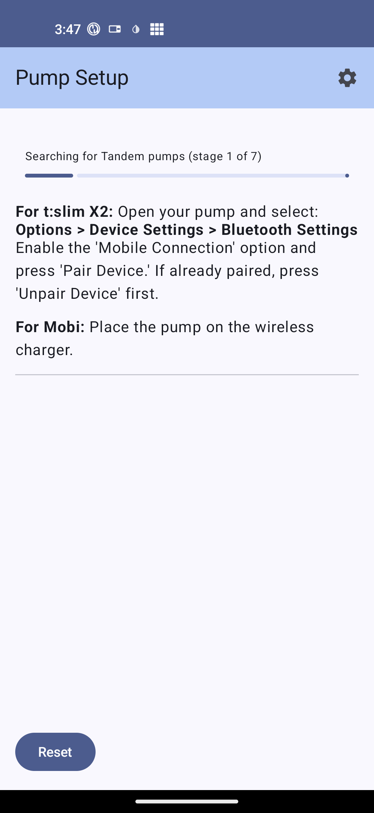
If this happens -- and you are sure that the Mobi is in pairing mode -- open the Android "App info" screen for ControlX2 and ensure that under the Permissions section, all of the listed permissions are marked under "allowed":
|
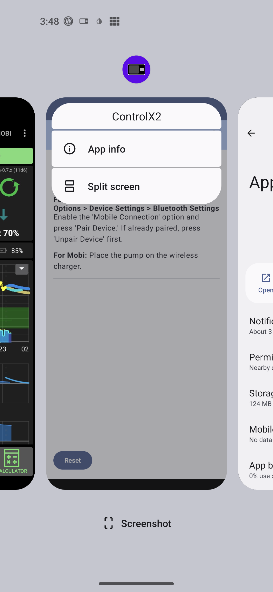 |
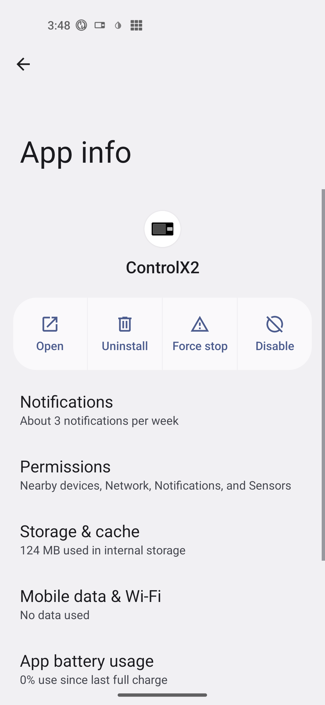 |
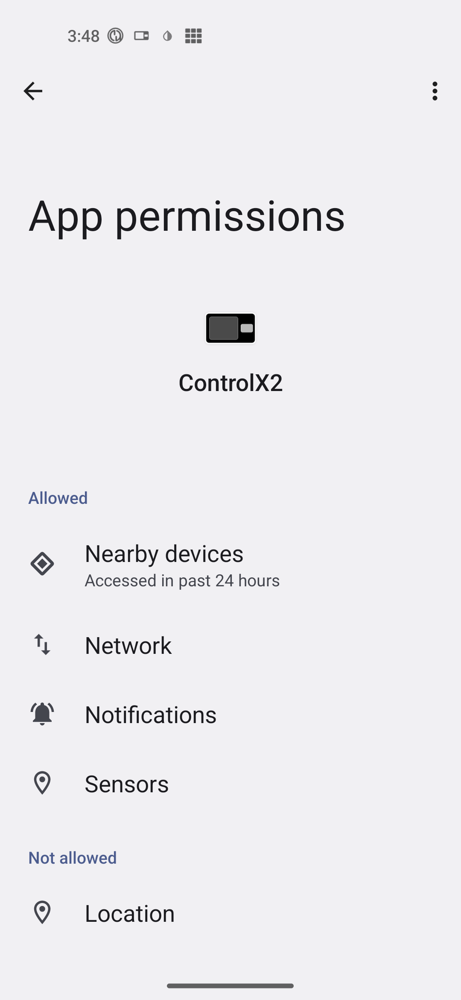 |
Some phones require the "Location" permission to be granted in order to search all Bluetooth devices. If you're having issues finding your pump, click "Location" and then grant permission either "when using the app" or "all of the time".
After your pump is succesfully communicating with ControlX2, you need to go into Setings, then Debug and then "View Pump State". There will be a JSON string with all connection data to copy. Use the option "Save to Clipboard". Force close ControlX2 and then start AAPS.
In AAPS, select Tandem Mobi as the pump and go to Configuration. Enable "Use Shared Connection", which will make "Shared Connection Data" visible. Click on that option and copy the JSON string you got from ControlX2 and exit the configuration screen. AAPS should now be able to connect to your pump. If for some reason this doesn't work immediately, "Force Close" AAPS and restart. The driver should be able to connect to the pump now.
Please note that the AAPS native pairing option is a new addition to the Mobi pump driver and is not as reliable as the ControlX2 pairing mode yet.
To pair using only AAPS, select Tandem Mobi as your pump in the Config Builder or initial AAPS setup wizard.
After enabling the Mobi pump driver, force quit and re-launch AAPS or restart your phone. Then go to the "TANDEM MOBI" AAPS tab and open the "..." menu to select "Tandem Mobi Preferences" followed by "Tandem Pump Connection Wizard."
The pairing wizard should guide you through the necessary steps. See the tips listed above in case your Mobi is not detected, or see the video below.
|
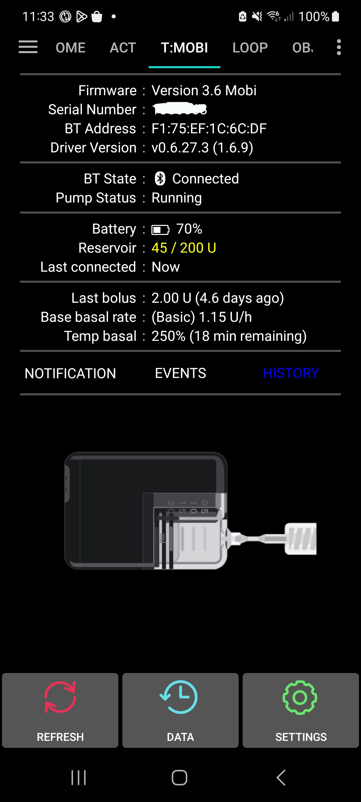 |
Once you have Mobi configured, the "Tandem Mobi" tab becomes available, displaying all important information. Information is divided in 6 different sections. Section 1: Information about your pump: Firmware, Serial Number and BT address. If you have configured display of the driver version, then the version of the AAPS Mobi driver will also be displayed (when reporting bugs in the driver, this information needs to be in the report. It helps us pinpoint the problem, and we can also determine if this error was already fixed). Section 2:: Displays the state of pump connection, this shows Connected if pump is connected, or if a command is running it will show the name of the command running as well as the Queue of commands (queue hides when empty). Section 3: Battery status, reservoir level and when the last command was processed. Section 4: Displays last bolus, base basal rate and if temp basal is currently running (and with what values). Section 5: Displays driver errors (mostly this would be filled if there is problem with configuration or if for some reason we lost connection with the pump). At the moment the driver is unable to reconnect automatically with pump in all circumstances (auto reconnect will be added in Phase 3). If you loose connection with the pump, please restart AAPS (with Force Stop). If there are no errors, this section is not visible. TODO Section 6: Indicator for Pump Data Status. This shows 3 labels:
If these options are in a natural color (depending on theme) then there is nothing to see, but if colors are present, that indicates there are new items available for display (red for new notifications, green for new events and blue for new history items). The notification indicator is especially important when setting up a pump for the first time, or changing the cartridge. The Mobi will reject attempts to change cartridge or fill tubing when you have not acknowledged notifications about insulin being suspended. Lower sections:You can see picture of the Mobi, and under it there are 3 buttons. These are described in the "Actions (buttons on lower part of overview)" section. |
|
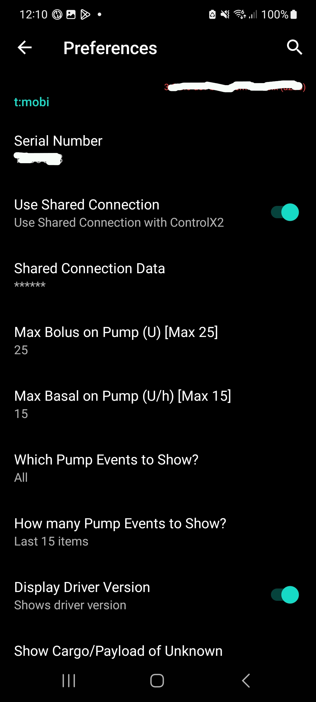 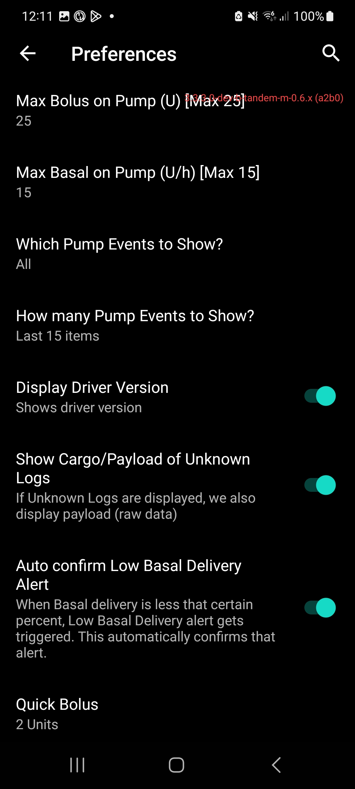 |
Use Shared connection: See the previous section (Connection setup) how this works. But in short, we can either use shared connection for which we also need to populate Shared connection data, or we can use just AAPS connection, for which we need to click on Tandem Pump Pairing which will lead us through the pairing process. Options become visible depending on which is selected. |
Terminology notes: notifications refer to any of these four types of messages. To view a list of which types of notifications correspond to each category, click the referenced link to view the enum values in source control:
Most notifications result in some kind of event being created. In the pump communication protocol, an event is a generic way for the pump to tell the connected phone that something happened requiring it to request more information and potentially alert the user. For the most part, you can think of notifications, events, alarms, and alerts as the same thing.
Since the pump doesn't have a screen, it must show notifications differently. This is done through beeps and/or vibrations and blinking of lights beside the button. When notifications occur, the pump also sends alarms or alerts over Bluetooth to ControlX2 or AndroidAPS, and in some cases an "event" is created. The driver reads this information explicitly every 5 minutes and if there are any notifications, the indicator is colored on the driver UI (see Overview section). In most situations the pump will also send an event that a notification occurred over the Bluetooth connection, and the pump driver will automatically request the relevant information about the event without needing to wait for the 5 minute cadence.
When notifications or events occur, you can click the Data button and then select the Notifications option, OR click the Notifications text above the pump icon, which will display all notifications. If you press on a notification which is listed, it will be dismissed on the pump, and the pump will stop beeping/vibrating every few minutes.
Most of the notifications (alerts) are just of informational value, but Alarms and some other notifications will prevent pump commands. So for example if you are in Alarm state (and you don't confirm the Alarm), you won't be able to Stop/Start the pump or do any Cannula/Reservoir actions. So confirming notifications is an important step. Note that these alarms are not only for unintended problems, but also for things like notifying the user that insulin delivery has been disabled for a long time.
To view the types of alerts and alarms which can be triggered, see the linked documentation above.|
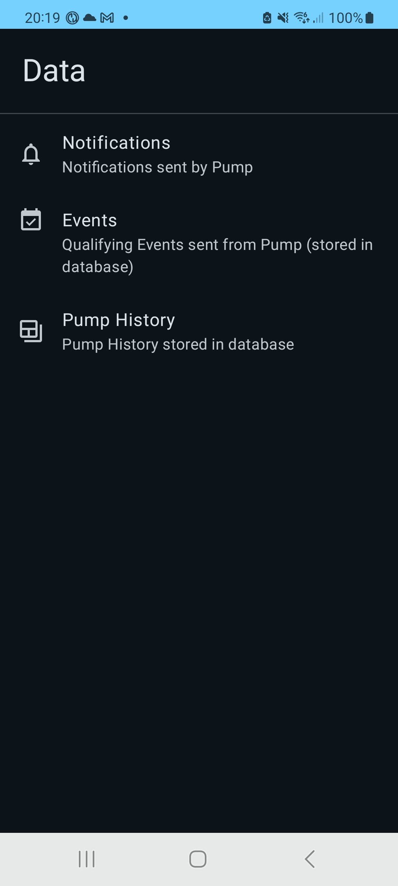 |
This is the main window from where you can access all 3 options. Events and Pump History are of informational value only, while Notifications can and must be confirmed/dismissed by the user. Each option will be explained in detail in following sections (and some background is also provided in some other sections, as it will be indicated in each of separate screen):
|
|
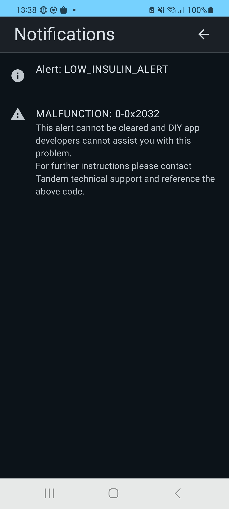 |
Notifications are sent by the pump and are either an Alert, Alarm, or Malfunction. See the Pump Notifications section for more information on notifications. The Mobi will regularly inform you when a notification is present that has not been acknowledged, with beeps/vibrates/LED lights on the device itself. To acknowledge a notification, click on the notification to dismiss it. The page should reload afterwards. When dismissing one notification, other active notifications may also be dismissed at the same time. For instance, the pump sends two distinct "Insulin Suspended" alarms -- one which is sent after 15 minutes of insulin delivery being suspended, and another which is sent when the first notification hasn't been acknowledged for some period of time. Dismissing one notification will dismiss the other -- so the page will reload after clicking on one of the two notifications and both will disappear. This is expected behavior (the duplicate notifications may be merged together in the UI in the future). Note that Malfunction notifications may appear when an actual malfunction has not occurred. Under the hood, malfunctions and alarms are related, and the Tandem Mobi app effectively considers unrecognized alarms as being critical malfunctions (which it then notifies you to contact tech support to resolve). We are using heuristics to mimick how the official Tandem Mobi app determines whether an alarm is of a known type, or is a legitimate malfunction requiring support, but it is not 100% perfect, so if you see a Malfunction listed reach out in the AAPS Discord channel for the Tandem driver if you see a malfunction listed. If you do call Tandem tech support, don't tell them you are using AndroidAPS, ControlX2, or DIY apps since none of these are officially supported by Tandem. |
|
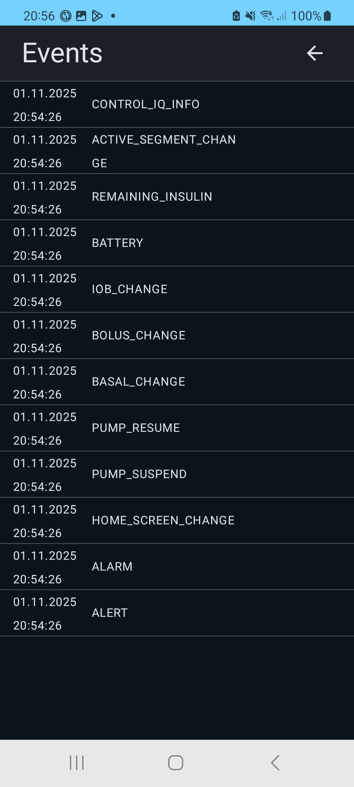 |
The Events view shows a history of "events" which are small bits of information sent by the pump to the phone which denote that something on the pump's status has changed. When events are sent, there is no additional information about what has changed besides the type of data which has changed -- it is a simple enum type (QualifyingEvent in the PumpX2 libraries). To look for more granular information, see the History tab. |
|
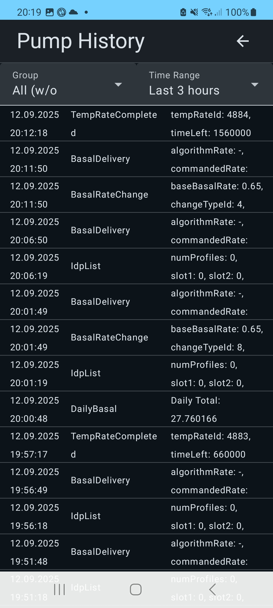 |
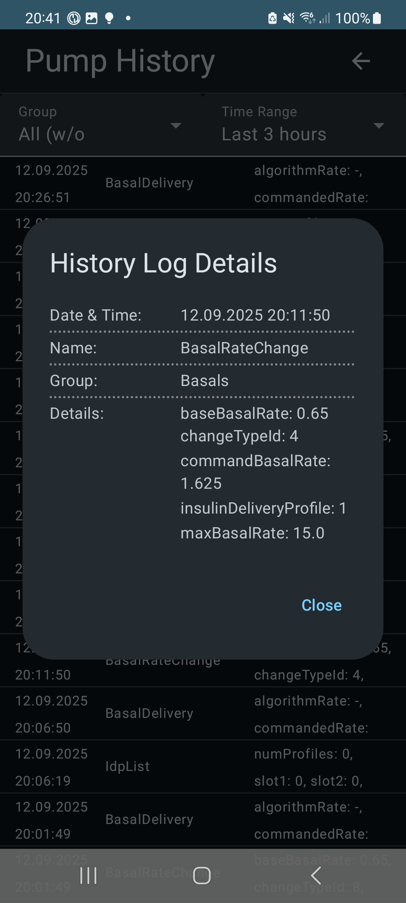 |
Pump history is retrieved every 5 minutes, together with the Pump Status check. History is always read from latest to oldest. We retrieve at max 5 chunks of history data, each containing 200 records. Once we reach 1.5 months, we don't retrive any more historical data. |
|
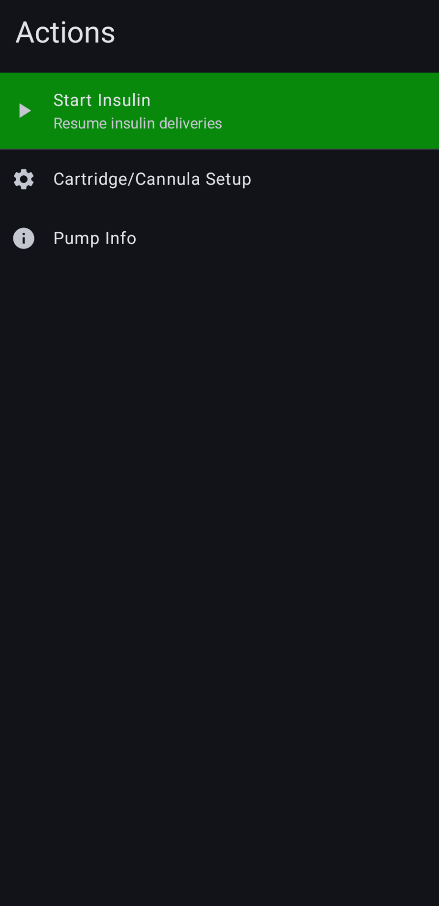 |
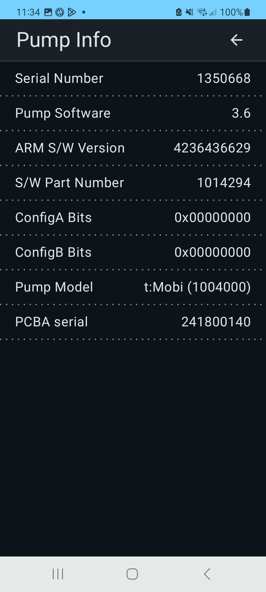 |
Settings and Actions |
Follow the instructions below for starting/stopping your pump, changing the cartridge, and filling the tubing or cannula.
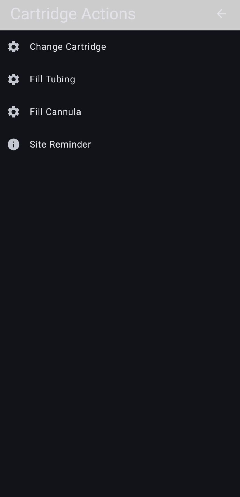 |
Changing Cartridge |
TODO: - New configuration options
- UI - Data: - Events, History, Notitfication
- UI - PumpInfo, Canula options ...